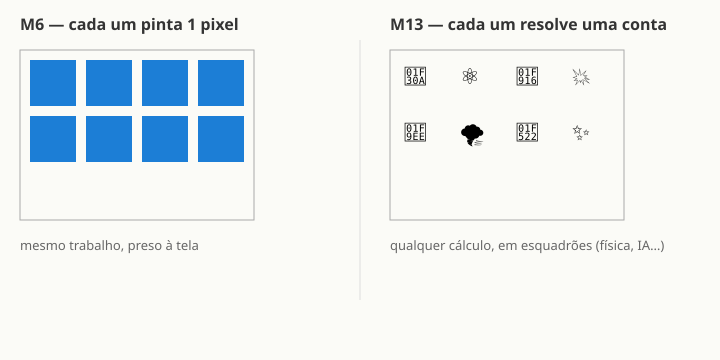

Até agora a GPU desenhou coisas pra você — pixels, triângulos, texturas. Mas a GPU é muito mais
do que uma pintora de tela: ela é uma calculadora paralela gigante. Física de fluidos,
partículas de jogos, treinamento de inteligência artificial — tudo isso roda na GPU. E não vira pixel
nenhum. Neste módulo, entendemos o salto de mentalidade que transforma o exército de pintores num
exército de calculadores.
Lembra do M6? Milhares de cópias do mesmo trabalho, cada uma presa ao seu pixel de tela.
O fragment shader não pode olhar pro vizinho; cada fragmento é uma ilha independente. Isso é
incrível para pintar — mas e se o cálculo não precisasse virar pixel nenhum? E se o resultado fosse
só um número — a posição de uma partícula, a temperatura de uma célula de simulação, o peso de uma
rede neural? O exército continua o mesmo; o que muda é o destino do trabalho.
O salto de mentalidade
No M6, o paralelismo era por pixel: a GPU disparava milhares de instâncias do seu
fragment shader, cada uma responsável por um ponto da tela. Funciona porque pintar pixels é uma tarefa
repetida, independente, previsível — exatamente o que a GPU ama.
O compute shader — disponível em APIs modernas como WebGPU, Metal e DirectX 12 — remove a amarração
com a tela. A GPU vira uma calculadora de propósito geral em paralelo: você dispara
grupos de threads (chamados esquadrões, ou workgroups) e cada thread faz qualquer conta que
você mandar. Física de fluidos? Cada thread simula uma célula de água. Partículas de explosão? Cada
thread atualiza a posição de uma partícula. Treinamento de rede neural? Cada thread multiplica um
pedaço da matriz. O resultado não precisa aparecer na tela — fica na memória da GPU pronto pro próximo
passo do cálculo.
M6 — paralelismo por pixel: mesma regra rodando em todos os pixels da tela ao mesmo tempo; resultado vai pro framebuffer.
M13 — compute / GPGPU: mesma ideia paralela, mas livre da tela; cada thread resolve qualquer conta; resultado fica na memória.
O hardware é o mesmo: os mesmos núcleos que pintam pixels também fazem física e IA.
O que muda é a API e a amarração: compute não está preso ao pipeline gráfico.

M6: o exército pinta pixels, um por soldado. M13: o mesmo exército resolve contas de qualquer tipo — a tela não é mais o destino obrigatório.
Esquadrões
No M6, o exército recebia uma única ordem: "pinta o teu pixel". Cada soldado trabalhava sozinho,
sem conversar com o vizinho. No compute, o exército se organiza em esquadrões
(o workgroup do GLSL, o numthreads do HLSL). Você não dispara um thread; dispara
um grupo deles de uma vez — por exemplo, um esquadrão de 64 ou 256 threads.
Por que grupos? Porque threads do mesmo esquadrão podem compartilhar uma memória rápida
(memória local do grupo) e sincronizar entre si. É a primeira vez que os soldados podem se
comunicar — mas só dentro do próprio esquadrão, não com todo o exército. Esse controle fino de
comunicação é o que permite algoritmos complexos: cada esquadrão resolve seu pedaço, e o resultado
combinado dos milhares de esquadrões é o cálculo inteiro.
A chamada pra disparar o trabalho se chama dispatch: você diz à GPU "rode X × Y × Z
esquadrões desse shader". Cada um encontra seu próprio identificador (o global_id) e sabe
exatamente que pedaço do problema lhe cabe — igual ao fragmento que sabe em qual pixel da tela está.
Test Drive — Enxame de Pontos
O demo abaixo mostra 40 pontos de luz se movendo ao mesmo tempo, cada um descrevendo sua própria
trajetória no tempo. É para dar a sensação de escala — a mesma ideia de "muitas coisas
acontecendo ao mesmo tempo" que está no coração do compute.
Atenção: isto é uma metáfora, não compute de verdade.
O que você vê acima é um fragment shader rodando um laço for dentro de um único
fragmento — a GPU ainda está presa ao pipeline gráfico, pintando pixels na tela. Isto não
é um compute shader.
Um compute shader de verdade usa uma API diferente (WebGPU, Metal, CUDA, DirectX
Compute) que nosso playground não tem: ele é WebGL 1, que simplesmente não suporta
compute. O demo serve para ilustrar visualmente a ideia de "muitos cálculos ao mesmo tempo", mas
não execute os cálculos da forma que um compute shader executaria. Quando estudar compute de
verdade, você precisará de outra ferramenta.
Então não dá pra fazer compute aqui no playground?
Não, de jeito nenhum. O playground usa WebGL 1, que não tem compute shaders. O que temos é
uma metáfora visual rodando em fragment shader — a ideia é certa, a ferramenta é outra.
WebGPU (o sucessor do WebGL) tem compute de verdade e já roda nos navegadores modernos.
Onde compute é usado na prática?
Em todo lugar que você imagina: física de jogos (partículas, destruição, colisão), simulações
científicas (dinâmica de fluidos, clima), machine learning (treinar e rodar redes neurais), ray
tracing acelerado, mineração de dados. A GPU virou a calculadora de escolha do mundo moderno
justamente por causa do compute.
É o mesmo hardware do M6?
Exatamente o mesmo. Os núcleos que pintavam seus pixels nos módulos anteriores são os mesmos
que treinam o ChatGPT e simulam fluidos. O que muda é a API e como o trabalho
chega neles — compute libera os núcleos da obrigação de pintar uma tela.
Compute shader = GPU como calculadora paralela de propósito geral, sem tela.
Esquadrão (workgroup) = grupo de threads que podem compartilhar memória rápida e sincronizar.
Dispatch = a chamada que dispara X × Y × Z esquadrões de uma vez.
WebGL 1 não tem compute — precisa de WebGPU, Metal, CUDA ou DirectX Compute.
Hardware igual ao M6; liberdade muito maior: qualquer cálculo, não só pintar pixels.
Recordação: caça ao par
Ligue cada termo ao seu significado (escreva a letra):
( ) compute A. grupo de threads que compartilham memória rápida
( ) esquadrão B. paralelismo preso à tela, um fragmento por pixel
( ) M6 C. conta de propósito geral na GPU, sem virar pixel
( ) WebGL 1 D. API de gráficos que não suporta compute shaders